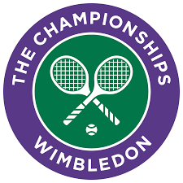

Since the first Championships in 1877, Wimbledon has grown from its roots as a garden-party tournament to a Grand Slam tournament with a following of millions around the world. The only Slam contested on grass continues to honour many long-standing traditions, including a strict dress code for competitors, the eating of strawberries and cream, and royal patronage. In 2013, Andy Murray became the first British male singles champion since Fred Perry in 1936.